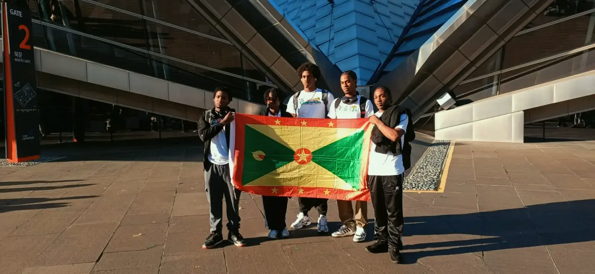
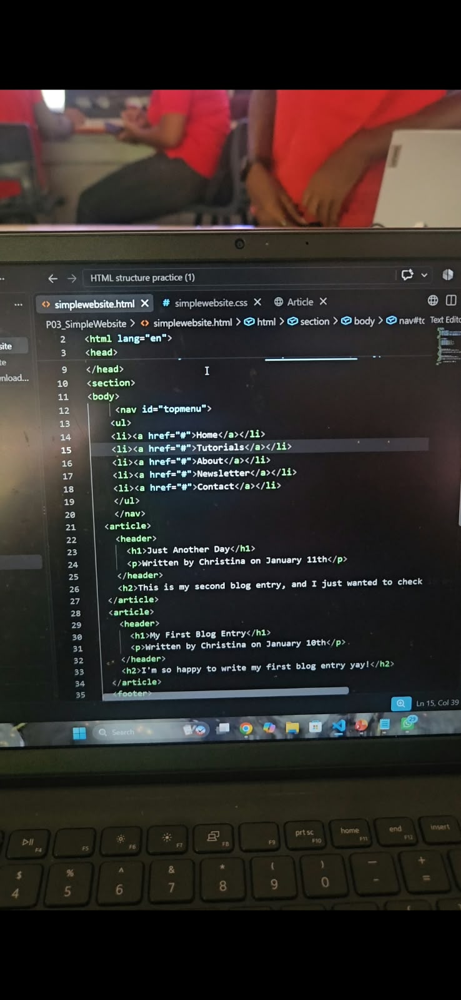
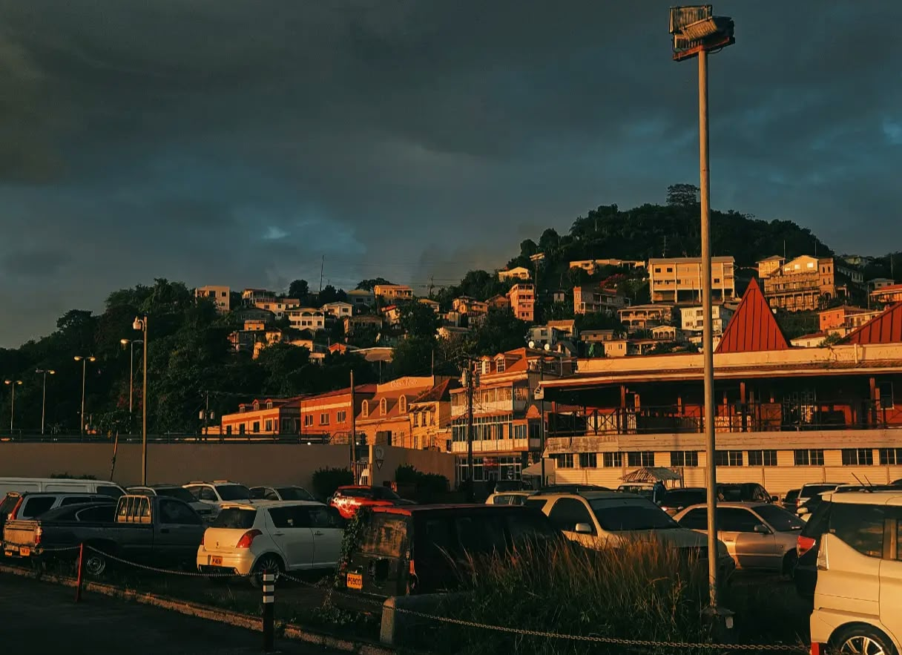
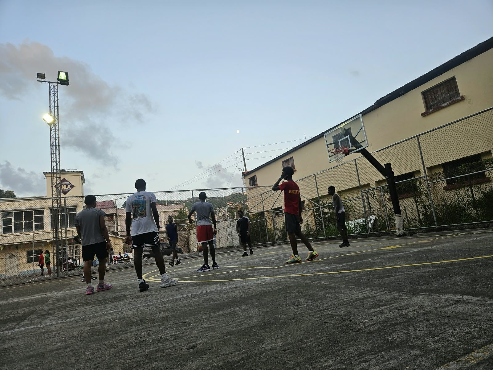

MY WORK & EXPERIENCES
My Portfolio
A collection of my experiences, interests and skills.

ROBOTICS
FIRST Global Challenge
I participated in the FIRST Global Challenge as part of Team Grenada. This international experience allowed me to interact with teams from different countries, exchange ideas and develop my interest in robotics and technology.

PROGRAMMING
Programming & Web Development
I enjoy learning programming languages such as HTML, CSS, JavaScript, Python and Java. I use these skills to explore web development and create simple computer applications.

CREATIVITY
Photography
Photography is one of my interests. I enjoy capturing moments, exploring different perspectives and expressing creativity through pictures.

SPORTS
Basketball
Basketball is one of my favourite interests. It encourages teamwork, discipline, communication and determination.